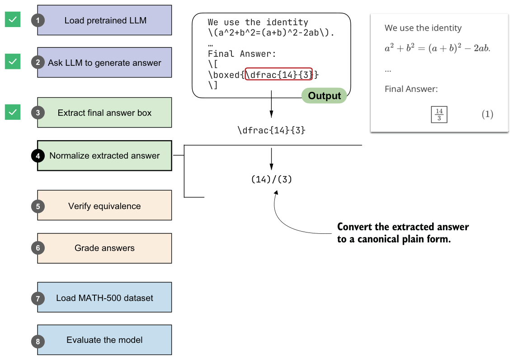

3.5Normalizing the extracted answer
Previously, we extracted the boxed answer "\dfrac{14}{3}" from the model’s response.
Models may print the same value in many ways, such as "\frac{14}{3}", "14/3","$14/3$", or "(14)/(3)". To implement and use a robust checking system to determine whether the answer is correct, we first need a consistent method of comparing results.
In this section, we’ll implement a normalization (or canonicalization) pass (step 4 in figure 3.7) that strips formatting and standardizes the answer.

The normalization step shown in figure 3.7 is implemented in the following normalize_text function.
LATEX_FIXES = [
(r"\\left\s*", ""),
(r"\\right\s*", ""),
(r"\\,|\\!|\\;|\\:", ""),
(r"\\cdot", "*"),
(r"\u00B7|\u00D7", "*"),
(r"\\\^\\circ", ""),
(r"\\dfrac", r"\\frac"),
(r"\\tfrac", r"\\frac"),
(r"°", ""),
]
RE_SPECIAL = re.compile(r"<\|[^>]+?\|>")
SUPERSCRIPT_MAP = {
"⁰": "0", "¹": "1", "²": "2", "³": "3", "⁴": "4",
"⁺": "+", "⁻": "-", "⁽": "(", "⁾": ")",
"⁵": "5", "⁶": "6", "⁷": "7", "⁸": "8", "⁹": "9",
}
def normalize_text(text):
if not text:
return ""
text = RE_SPECIAL.sub("", text).strip() match = re.match(r"^[A-Za-z]\s*[.:]\s*(.+)$", text)
if match:
text = match.group(1) text = re.sub(r"\^\s*\{\s*\\circ\s*\}", "", text)
text = re.sub(r"\^\s*\\circ", "", text)
text = text.replace("°", "")
match = re.match(r"^\\text\{(?P<x>.+?)\}$", text)
if match:
text = match.group("x")
text = re.sub(r"\\\(|\\\)|\\\[|\\\]", "", text) for pat, rep in LATEX_FIXES:
text = re.sub(pat, rep, text) def convert_superscripts(s, base=None):
converted = "".join(
SUPERSCRIPT_MAP[ch] if ch in SUPERSCRIPT_MAP else ch
for ch in s
)
if base is None:
return converted
return f"{base}**{converted}"
r"([0-9A-Za-z\)\]\}])([⁰¹²³⁴⁵⁶⁷⁸⁹⁺⁻]+)",
text = re.sub(
lambda m: convert_superscripts(m.group(2), base=m.group(1)),
text,
)
text = convert_superscripts(text) text = text.replace("\\%", "%").replace("$", "").replace("%", "")
text = re.sub(
r"\\sqrt\s*\{([^}]*)\}",
lambda match: f"sqrt({match.group(1)})",
text,
)
text = re.sub(
r"\\sqrt\s+([^\\\s{}]+)",
lambda match: f"sqrt({match.group(1)})",
text,
) text = re.sub(
r"\\frac\s*\{([^{}]+)\}\s*\{([^{}]+)\}",
lambda match: f"({match.group(1)})/({match.group(2)})",
text,
)
text = re.sub(
r"\\frac\s+([^\s{}]+)\s+([^\s{}]+)",
lambda match: f"({match.group(1)})/({match.group(2)})",
text,
)
text = text.replace("^", "**")
text = re.sub(
r"(?<=\d)\s+(\d+/\d+)",
lambda match: "+" + match.group(1),
text,
)
text = re.sub(
r"(?<=\d),(?=\d\d\d(\D|$))",
"",
text,
)
return text.replace("{", "").replace("}", "").strip().lower()This normalize_text function takes an extracted answer string and rewrites it into a standardized format that we can reliably compare against reference solutions. It first strips away special tokens and unnecessary LaTeX clutter, such as \left, \right, or degree symbols. It then unwraps cases like \text{...}, removes inline math markers, and rewrites common structures into a calculator-style form. For example, it turns \sqrt{a} into sqrt(a) and \frac{a}{b} into (a)/(b). Finally, it normalizes exponents, mixed numbers, and thousands separators and cleans up braces and casing. In short, the function transforms differently formatted LaTeX outputs into a clean, standardized string representation.
Let’s try the normalize_text function on our model answer:
print(normalize_text(extract_final_candidate(model_answer)))Instead of printing the answer with LaTeX formatting (r"\dfrac{14}{3}"), it returns the answer in a standardized, LaTeX-free form:
"(14)/(3)"Next, let’s try a differently formatted answer:
print(normalize_text(r"\text{\[\frac{14}{3}\]}"))This also returns "(14)/(3)", as intended.
We now have a robust method that extracts answer texts from an LLM’s response. In the next section, we’ll implement a function that compares the LLM answer with a correct reference answer.